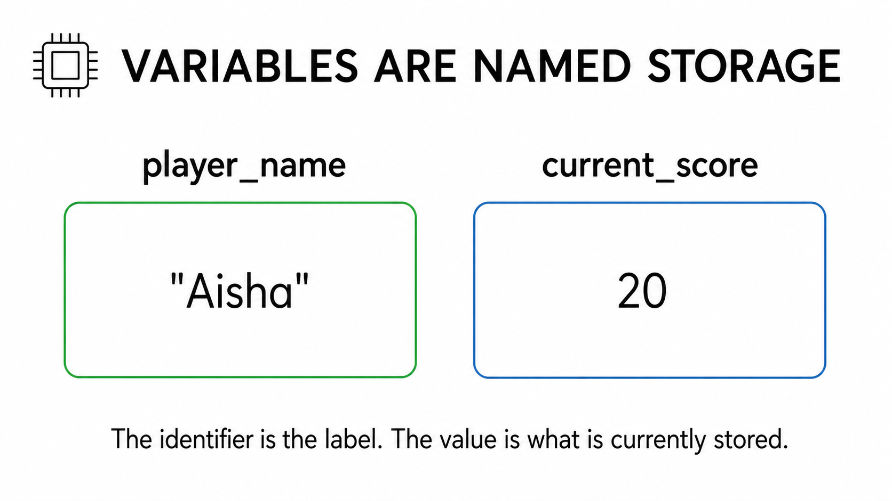
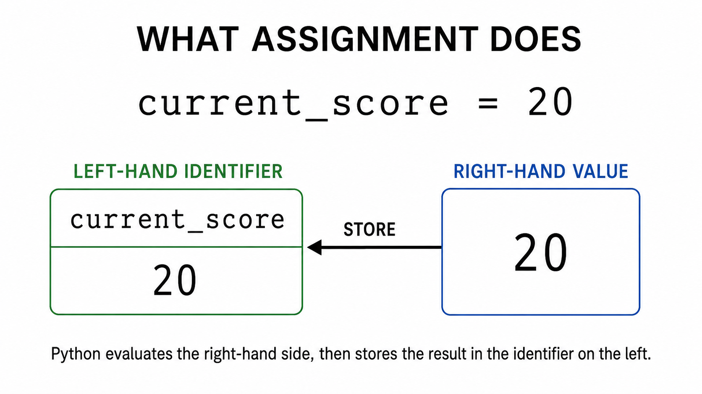
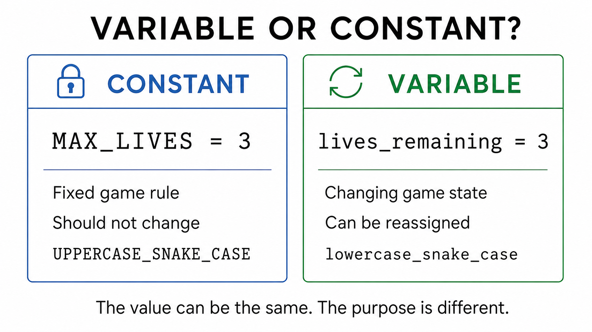
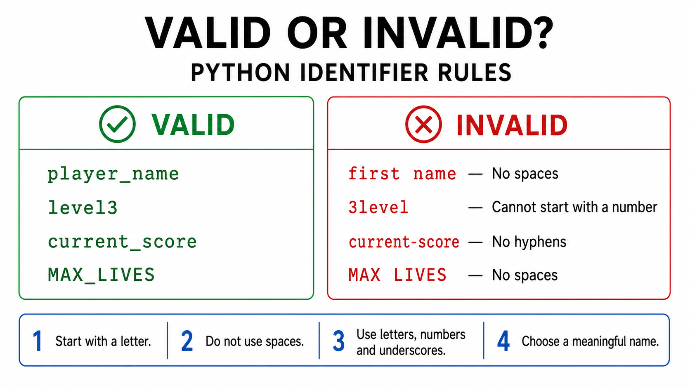
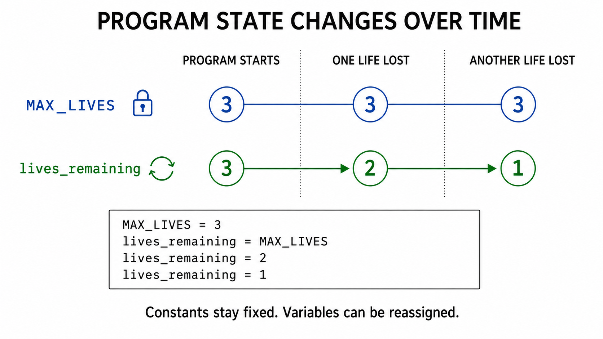

Learn how names store values, decide what should change, and build a short Python program in your own IDE.
60 minutesAO1 · AO2 · AO3Paper 1 + Paper 2Own Python IDEComplete PDF evidence
W02S02 · Variables & constantsStudent · Class
Starter · Page 1 of 50% complete
Saved on this device
Teacher preview is active. Every page is open and preview data is stored separately.
WAGBA and Knowledge · Skills · Understanding
WAGBA: Using meaningful identifiers and assignment to store and change values, while distinguishing variables from constants.
K: variables, constants and assignment. S: classify, predict, write and test. U: purpose determines the role of a name.
Starter · First thoughts · AO1/AO2
What changes—and what stays fixed?
Work independently. Make sensible predictions; today’s vocabulary will be taught after you answer.
Target: 7 minutes
Five quick questions
score = 5
score = 8
print(score)
Today’s objectiveTo create, run and explain a short Python program that uses variables, constants, assignment and meaningful identifiers.
Paper 1Read, write, run and change Python code.
Paper 2Define, distinguish, predict and explain.
Main Activity 1 · Learn, classify and justify · AO1/AO2
Build confidence with names and roles
Read the short teaching notes first. Then complete the confidence ladder from simple identification to explanation.
Target: 20 minutes
OxfordAQA Student BookPrinted pages 6–7 and 22Specification 3.2.1
Reading: named storage
A variable is a named storage location whose value can change while a program runs. An assignment statement stores a value using =. In Python, the first assignment creates the variable; a later assignment can replace its stored value.
A constant is a named value that should not change while the program runs. Python does not enforce constants, so programmers use UPPERCASE_SNAKE_CASE to communicate “do not change this”. Variables normally use lowercase_snake_case.
Identifiers should start with a letter, contain only letters, numbers and underscores, have no spaces, and describe their purpose.

Visual 1 · An identifier labels stored data. Select to enlarge.

Visual 2 · Assignment stores or replaces a value.
Worked example
player_score = 12
Identifierplayer_score
Stored value12
Data typeInteger / int
RoleVariable, because the score may change

Visual 3 · The program purpose determines the role.

Visual 4 · Check every identifier before coding.
The decision modelIf the name represents a fixed rule or setting that should remain unchanged, use a constant. If it represents user data, a result, or changing program state, use a variable. The current value alone does not decide the role.
Confidence ladder A: classify 12 names
Choose the role that matches the purpose described by each name.
DAYS_IN_WEEK = 7fixed calendar fact
student_name = "Aina"user data
MAX_LIVES = 3fixed game rule
lives_remaining = 3changes during play
SCHOOL_NAME = "Tenby"fixed for this program
current_score = 0changes during play
PASS_MARK = 50fixed assessment rule
student_mark = 72result for one student
TICKET_PRICE = 12.50fixed setting
tickets_sold = 0changes after each sale
GAME_VERSION = "1.0"fixed for this release
player_level = 1changes as player progresses
Confidence ladder B: explain the pairs
Both names in each pair may initially store the same value. Explain why their roles differ.
Identifier check
Main Activity 2 · Paper 1 practical · AO2/AO3
Predict, run, adapt and explain
Do the prediction before opening your IDE. Run the code on your own device; this webpage does not execute Python.
Target: 22 minutes

Visual 5 · Trace the stored values from top to bottom.
The report includes your profile, every response, all pasted code and each evidence image—even from unfinished sections.
W02S02_Firstname_Class.pdf
Select Export complete PDF.
In the print window choose Save as PDF.
Use the suggested filename and open the saved PDF to check it.
Open the correct Microsoft Teams assignment.
Select Add work → Upload from this device.
Select the PDF, check it has attached, then select Turn in.
Reading is adapted and paraphrased from the OxfordAQA International GCSE Computer Science Student Book, printed pages 6–7 and 22, and aligned to OxfordAQA 9210 specification section 3.2.1.